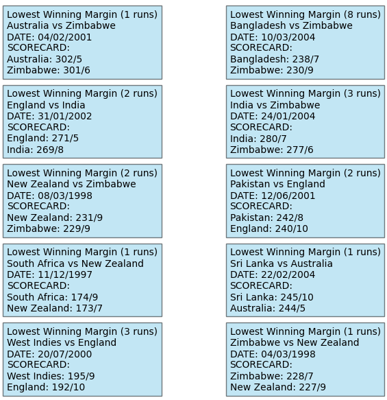
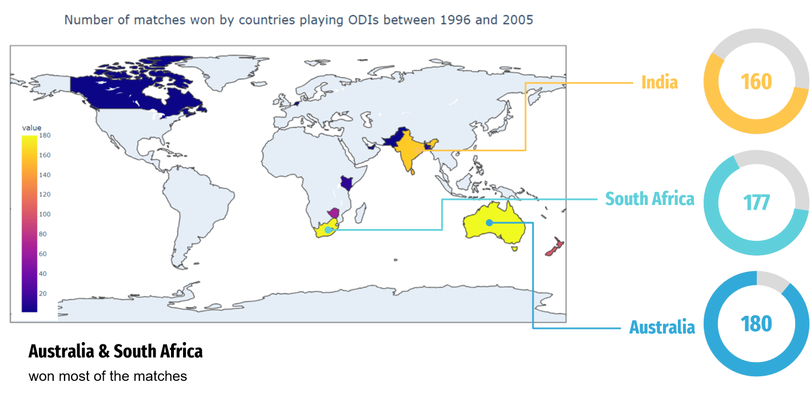

Introduction
This project delves into the transformative decade of cricket from 1996 to 2005. Through statistical analysis and visualizations, we uncover strategic shifts, iconic rivalries, and the emergence of cricket legends. The study captures pivotal moments in cricketing history through data and offers insights into trends, team performances, and game dynamics.
Investigative Framework
- Analyze the impact of venue dynamics on match outcomes, focusing on home-ground advantages.
- Investigate the correlation between winning the toss and match outcomes.
- Explore team performances on neutral vs. opponent home grounds.
Data
The dataset, sourced from ESPN Cricinfo, includes detailed records of ODI matches from 1996 to 2005. Attributes analyzed include match outcomes, scores, wickets, toss decisions, player performances, and geographical contexts.
Methods
- Data Cleaning: Addressed missing values, standardized date formats, and ensured consistency.
- Exploratory Data Analysis (EDA): Unveiled patterns and trends through visualizations and descriptive statistics.
- Statistical Tests: Conducted hypothesis tests to validate findings.
Infographics
Here are some of the visualisations generated during analysis.
Figure: Lowest Winning marings by runs
Figure: Global ODI Match Wins (1996-2005)
Statistical Tests
Hypotheses Tested
- India batting averages against Pakistan & South Africa: No significant difference in batting averages.
- Toss Winners: To check whether there is an increased likelihood of winning the match for teams that win the toss?
- Neutral vs. Opponent Grounds: Significant advantage for India and England on neutral grounds.
Explore the Code
The source code and implementation details of this project are available on my GitHub repository. Feel free to explore!
View on GitHub